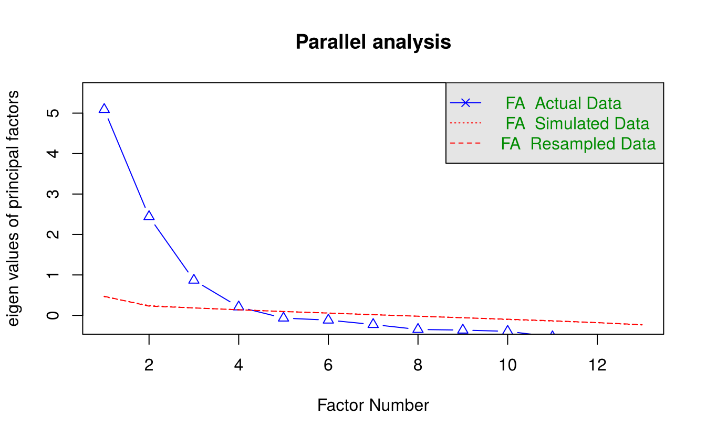
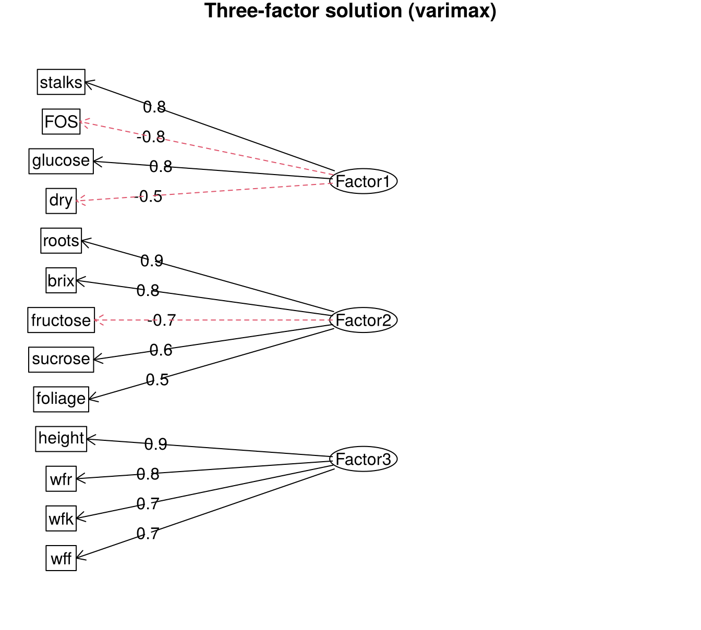

20 Factor analysis
Factor analysis (FA) explains the correlations among \(p\) observed variables in terms of a smaller number \(m\) of unobserved (latent) variables called common factors. Where PCA (Chapter 19) is a mathematical rearrangement of the total variance, factor analysis is a statistical model: it assumes that the observed variables are generated by the factors plus variable-specific errors.
20.1 The factor model
For standardised variables \(x_1, \ldots, x_p\),
\[x_i = \lambda_{i1} F_1 + \lambda_{i2} F_2 + \cdots + \lambda_{im} F_m + \varepsilon_i, \qquad i = 1, \ldots, p\]
where
- \(F_1, \ldots, F_m\) are the common factors (uncorrelated, with variance 1);
- \(\lambda_{ij}\) is the loading of variable \(i\) on factor \(j\) (for uncorrelated factors, the correlation between \(x_i\) and \(F_j\));
- \(\varepsilon_i\) is the specific factor of variable \(i\), with variance \(\psi_i\) (the uniqueness).
The variance of each standardised variable splits into
\[1 = \underbrace{\lambda_{i1}^2 + \cdots + \lambda_{im}^2}_{\text{communality } h_i^2} + \psi_i\]
The communality \(h_i^2\) is the part of the variance of \(x_i\) shared with the other variables through the common factors.
| PCA | Factor analysis | |
|---|---|---|
| Aim | summarise total variance | explain correlations (common variance) |
| Model | none; exact transformation | \(x = \Lambda F + \varepsilon\) |
| Components / factors | linear combinations of the variables | latent variables generating the variables |
| Unique variance | included in components | separated as \(\psi_i\) |
20.2 Steps in factor analysis
- Check that the data are suitable: the variables must be sufficiently correlated.
- Decide the number of factors.
- Estimate the loadings (here by maximum likelihood).
- Rotate the factors to make them easier to interpret.
- Name the factors from the variables that load highly on them, and compute factor scores if needed.
20.3 Example: traits of yacon
The yacon data in agricolae record 13 traits on yacon (Smallanthus sonchifolius) plants of eight entries at three localities in Peru: plant height, number of stalks, fresh weights of roots (wfr), foliage (wff) and crown (wfk), dry matter of roots (roots), foliage and crown (dry), and the contents of fructo-oligosaccharides (FOS), glucose, fructose and sucrose (%) and degrees Brix. Can the correlations among these traits be explained by a few underlying factors?
library(agricolae)
data(yacon)
vars <- c("height", "stalks", "wfr", "wff", "wfk", "roots", "FOS",
"glucose", "fructose", "sucrose", "brix", "foliage", "dry")
x <- yacon[, vars]
dim(x)#> [1] 432 1320.3.1 Step 1: suitability of the data
Bartlett’s test of sphericity tests whether the correlation matrix is an identity matrix (no correlations at all). The Kaiser–Meyer–Olkin (KMO) measure of sampling adequacy compares correlations with partial correlations; values above 0.6 are considered adequate and above 0.8 good.
library(psych)
cortest.bartlett(cor(x), n = nrow(x))#> $chisq
#> [1] 5481
#>
#> $p.value
#> [1] 0
#>
#> $df
#> [1] 78
KMO(x)#> Kaiser-Meyer-Olkin factor adequacy
#> Call: KMO(r = x)
#> Overall MSA = 0.83
#> MSA for each item =
#> height stalks wfr wff wfk roots FOS glucose
#> 0.78 0.80 0.80 0.90 0.83 0.77 0.80 0.87
#> fructose sucrose brix foliage dry
#> 0.85 0.79 0.83 0.95 0.73Bartlett’s test is highly significant and the overall KMO is 0.83, so the data are suitable for factor analysis.
20.3.2 Step 2: number of factors
Parallel analysis compares the eigenvalues of the data with those of random data of the same size; factors are retained while the observed eigenvalue exceeds the random one.
set.seed(531)
fa.parallel(x, fa = "fa", n.iter = 50, main = "Parallel analysis")
#> Parallel analysis suggests that the number of factors = 4 and the number of components = NAParallel analysis suggests three or four factors. We first fit three factors for an easily interpreted solution.
20.3.3 Steps 3 and 4: estimation and rotation
factanal() (base R) fits the model by maximum likelihood. A varimax rotation keeps the factors uncorrelated while making each variable load highly on as few factors as possible.
fa3 <- factanal(x, factors = 3, rotation = "varimax", scores = "regression")
print(fa3$loadings, cutoff = 0.4, sort = TRUE)#>
#> Loadings:
#> Factor1 Factor2 Factor3
#> stalks 0.844
#> FOS -0.802 0.413
#> glucose 0.762 -0.458
#> dry -0.514
#> roots 0.913
#> fructose 0.499 -0.720
#> sucrose 0.614
#> brix -0.516 0.795
#> foliage 0.536
#> height 0.895
#> wfr 0.848
#> wff 0.453 0.703
#> wfk 0.749
#>
#> Factor1 Factor2 Factor3
#> SS loadings 3.169 3.141 3.088
#> Proportion Var 0.244 0.242 0.238
#> Cumulative Var 0.244 0.485 0.723Loadings below 0.4 are hidden to make the pattern clear. The three factors together explain 72% of the total variance.
round(data.frame(communality = 1 - fa3$uniquenesses,
uniqueness = fa3$uniquenesses), 2)#> communality uniqueness
#> height 0.80 0.20
#> stalks 0.75 0.25
#> wfr 0.79 0.21
#> wff 0.71 0.29
#> wfk 0.65 0.35
#> roots 0.96 0.04
#> FOS 0.90 0.10
#> glucose 0.80 0.20
#> fructose 0.87 0.13
#> sucrose 0.39 0.61
#> brix 0.92 0.08
#> foliage 0.54 0.46
#> dry 0.30 0.70Most traits have high communalities; sucrose, foliage dry matter and crown dry matter have the most specific (unique) variance.
20.3.4 Step 5: naming the factors
- Factor 1 — sugar composition: high positive loadings for glucose, number of stalks and fructose, and high negative loadings for FOS, Brix and dry matter. It contrasts plants rich in simple sugars with plants rich in FOS.
- Factor 2 — dry matter and soluble solids: dry root matter, Brix, sucrose and foliage dry matter.
- Factor 3 — fresh biomass: plant height and the fresh weights of roots, crown and foliage.
fa.diagram(fa3$loadings, main = "Three-factor solution (varimax)")
20.3.5 Goodness of fit
factanal() also tests whether \(m\) factors are sufficient:
#> chi_square df p_value.objective
#> 6.534e+02 4.200e+01 1.093e-110The test rejects the three-factor model. With 432 observations the test is very sensitive, and it rejects even the four-factor model; in practice the number of factors is chosen for interpretability and from parallel analysis rather than from this test alone.
20.3.6 Factor scores
Factor scores estimate the value of each factor for each plant and can be used in further analysis, for example to compare localities:
scores <- as.data.frame(fa3$scores)
loc_scores <- aggregate(scores, by = list(locality = yacon$locality), FUN = mean)
loc_scores[, -1] <- round(loc_scores[, -1], 2)
loc_scores#> locality Factor1 Factor2 Factor3
#> 1 CAJ -0.16 0.04 -0.86
#> 2 LIM 0.96 -0.41 0.69
#> 3 OXA -0.80 0.37 0.17Plants at Lima score high on Factor 1 (more simple sugars, less FOS) and on fresh biomass (Factor 3); plants at Oxapampa are the richest in FOS; plants at Cajamarca have the lowest fresh biomass.
20.3.7 Oblique rotation
If the factors are expected to be correlated, an oblique rotation such as promax allows it. The fa() function of psych reports the factor correlations:
fa3p <- fa(x, nfactors = 3, rotate = "promax", fm = "ml")
print(fa3p$loadings, cutoff = 0.4, sort = TRUE)#>
#> Loadings:
#> ML3 ML1 ML2
#> stalks 0.978
#> FOS -0.809
#> glucose 0.735
#> dry -0.567
#> roots 1.059
#> fructose -0.661
#> sucrose 0.698
#> brix 0.739
#> height 0.900
#> wfr 0.867
#> wff 0.477 0.675
#> wfk 0.734
#> foliage 0.488
#>
#> ML3 ML1 ML2
#> SS loadings 3.091 3.017 3.082
#> Proportion Var 0.238 0.232 0.237
#> Cumulative Var 0.238 0.470 0.707
round(fa3p$Phi, 2) # correlations between the factors#> ML3 ML1 ML2
#> ML3 1.00 -0.63 0.10
#> ML1 -0.63 1.00 -0.07
#> ML2 0.10 -0.07 1.00The pattern of loadings is very similar to the varimax solution. With an oblique rotation the loadings are regression weights rather than correlations, so a value slightly above 1 (as for roots) can occur. The sugar-composition and dry-matter factors are fairly strongly correlated (about −0.63), which suggests that an oblique solution describes these traits more faithfully than an orthogonal one.
Exercises
- Fit a four-factor solution to the yacon traits. Does the fourth factor add a meaningful interpretation?
- Perform a factor analysis of the
ability.covdata set (six ability tests on 112 people; usefactanal(factors = 2, covmat = ability.cov)) and name the factors. - Compare the loadings of the first three principal components of the yacon traits with the three-factor solution. How do they differ?